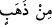

ırmaklar akan cennetlere kabul eder. Bunlar orada altın bileziklerle ve incilerle
bezenirler. Orada giyecekleri ise ipektir.
“Muhakkak ki Allah, îmân edip iyi davranışlarda bulunanları, zemininden ırmaklar
akan” dört nehir akan “cennetlere kabul eder. Bunlar orada altın bileziklerle ve
incilerle bezenirler” Yâni onları Allah Teâlâ’nın emriyle melekler cennette süsleyip
donatır.
“ kelimesi, bileziklerin altın ve gümüşle süslenmiş olduğu ya da onların her iki
cins bilezikten de takındıkları anlamında “ kelimesine atfedilerek cer ile de
okunmuştur. Onlar bu iki cins bilezikten dönüşümlü olarak veya dünyada kadınların
çeşitli süsleri bir arada kullandıkları gibi birlikte takınırlar. Birisi kırmızı altından
diğeri de beyaz inciden iki bileziğin takıldığı bilek ne de güzeldir!
“Lü’lü’ (inci)” kelimesinin “zeheb (altın)” kelimesine değil, “esâvir (bilezikler)”
kelimesine atfedildiği de söylenmiştir. Çünkü bileziğin inciden olması âdetten değildir.
Bu görüş yanlıştır. Çünkü bu görüşte mülk alemini melekût alemi ile kıyas vardır. Bu
ise şu hadise göre hatâdır: “Sâlih kullarıma hiçbir gözün görmediği hiçbir kulağın
işitmediği, hiçbir beşerin kalbine düşmeyen şeyleri hazırladım.”[18] Saîd b.
Cübeyr’in şu sözü de bunu desteklemektedir: “Cennetliklerin her biri üç bilezikle
bezenir. Bu bileziklerden birisi altından, birisi gümüşten, birisi de inci ve yakutlardan
olur.” Şeyhzâde der ki: “Açıktır ki bilezik tek başına inciden biri diğerine dizilmek
sûretiyle yapılabilir.” Bu konuda söylenecek son söz şudur: Bu bilezik önceki zamanda
meşhur olmayan bir şey olmasıdır. Yâni böylece dünyada tanımadıkları bir şey ile
onları teşvik için olmuş olur.
“Orada giyecekleri ise ipektir.” Yani onlar cennette ibrişimden elbiseler giyerler.
Halbuki bu tür elbiseler dünyada erkeklerin giymeleri haramdır. Nitekim Ebû Saîd
(r.a)’ın rivâyet ettiğine göre Nebî (s.a.) şöyle buyurmuştur: “Dünyada ipek giyen kimse,
âhirette onu giyemeyecektir.”[19] O kimse cennete girse de cennet ehli ipek elbise
giydiği halde o giyemeyecektir. Bu sebeple Ebû Hanîfe (r.h.): “Erkeğe dört parmak
miktarının dışında ipek giymesi helâl olmaz.” demiştir. Çünkü rivâyet olunduğuna göre
Nebî (a.s.), kenarları ipekle çevrilmiş bir cübbe giymiş, savaş hâli ve diğer zamanlar
arasında ayırım yapmamıştır.[20] İmam Ebû Yûsuf ve Muhammed, zarûrete binâen
harbde ipek giymenin helâl olacağını söylemiştir. Biz deriz ki: Zarûret, kumaşın
atkısının ibrişimden çözgüsünün ise başkasından olmasıyla ortadan kalkar.[21] Ebû
Hanîfe’ye göre yüzleri ipekten yapılan yastıkta ve yatakta yatmak câizdir. Çünkü Nebî
(a.s.)’ın üzeri ipekle kaplı bir minder üzerine oturduğu rivâyet edilmiştir. İmam Ebû
Yûsuf ve Muhammed ise bunun mekruh olduğunu, çözgüsü ipekten atkısı başkasından ya
da tersi olan kumaştan yapılan elbiseyi giymenin sadece harbde câiz olduğunu
söylemişlerdir. Nitekim Bahrul-ulûm’da böyle denilmektedir.
İmam Demîrî, Hayâtü’l-hayevân’da şöyle der: “Biti def’etmek için ipek elbise
giymek câiz olur. Çünkü ipekte biti kabul etmeyen bir özellik vardır. Envâru’l-